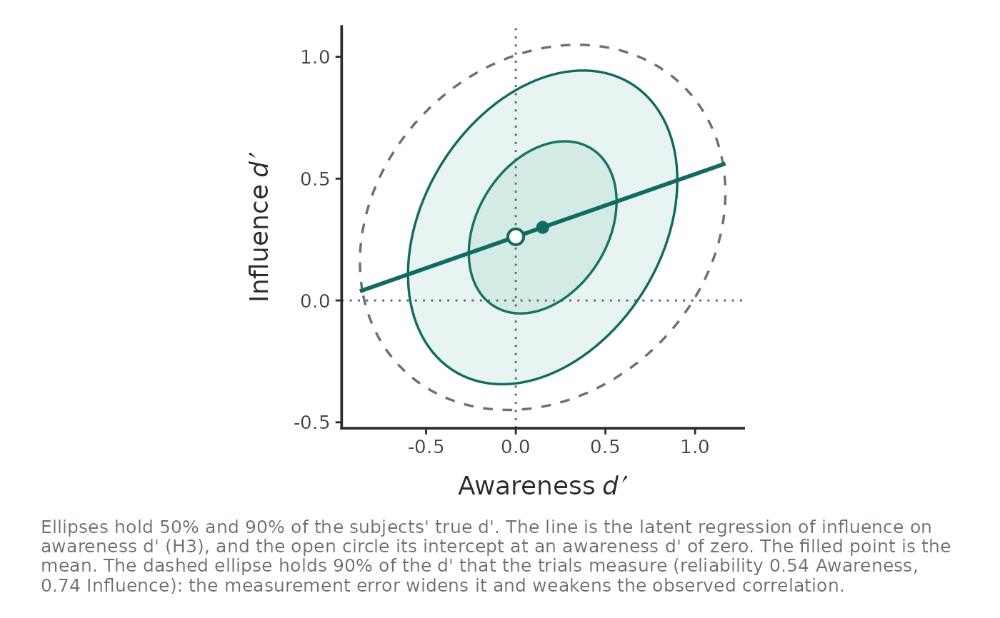
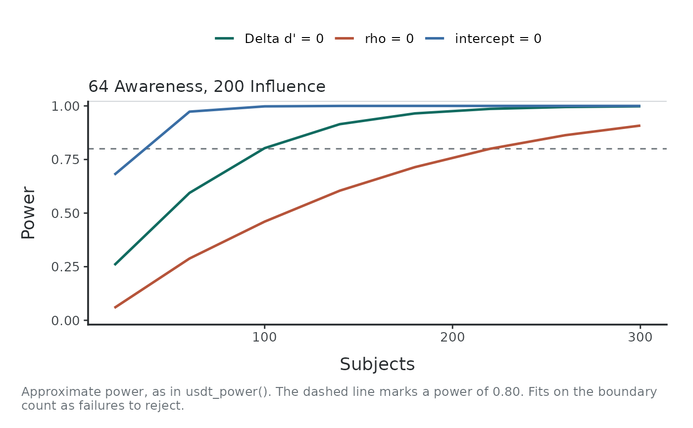
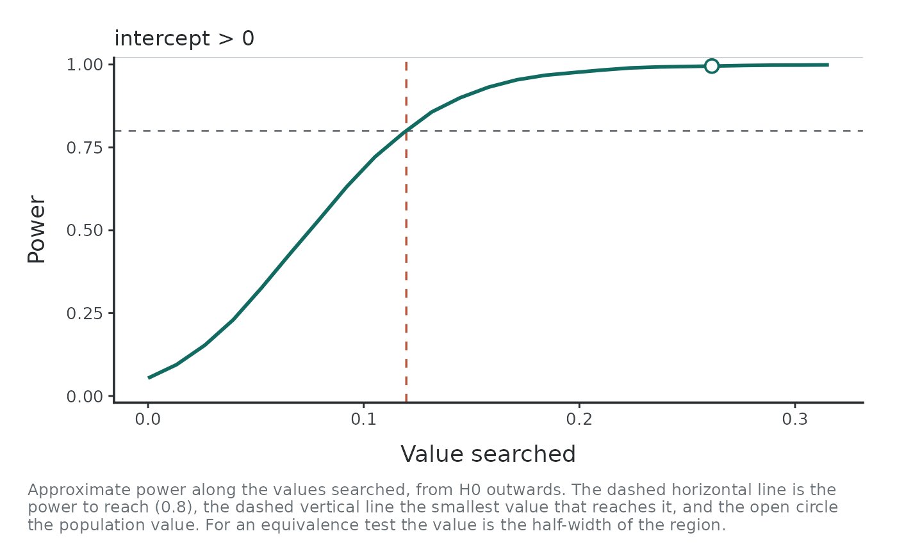
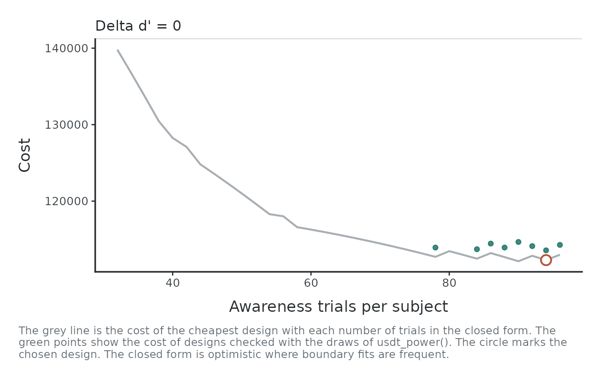

Draws the objects of the power analysis with the style of the other uSDT plots.
Usage
# S3 method for class 'usdt_population'
plot(
x,
trials = NULL,
signal = 0.5,
dichotomize = c("none", "influence", "awareness", "both"),
caption = TRUE,
...
)
# S3 method for class 'usdt_power'
plot(x, caption = TRUE, ...)
# S3 method for class 'usdt_mdes'
plot(x, caption = TRUE, ...)
# S3 method for class 'usdt_plan'
plot(x, caption = TRUE, ...)Arguments
- x
A
usdt_population,usdt_power,usdt_mdesorusdt_planobject.- trials
For a population, the number of trials per subject in each task, as in
usdt_power(), to add the distribution of the measured \(d'\).- signal, dichotomize
For a population with
trials, as inusdt_power().- caption
Logical. Show the caption that explains the plot under it (default
TRUE).- ...
Ignored.
Details
A
usdt_populationshows, for each scenario, the bivariate normal distribution of the true \(d'\) across subjects (ellipses holding 50% and 90% of them) with the latent regression of influence on awareness \(d'\) and its intercept at \(d'_A = 0\). Withtrials, a dashed ellipse adds the distribution of the \(d'\) that those trials measure, wider by the measurement error, which is what attenuates the observed correlation.A
usdt_powershows power against the number of subjects, or of trials when the subjects are fixed, one line per hypothesis. A simulation adds its 95% Wilson intervals. A single design shows one point per hypothesis.A
usdt_mdesshows the power along the values searched, with the smallest detectable effect and the population value marked.A
usdt_planwith subjects and trials free shows the cost of the cheapest closed-form design for each number of trials (a line for one free task, a map for two), with the chosen design marked. With one value free, it shows the approximate power (or the expected interval width) along it.
Examples
pop <- usdt_population(dprime = c(awareness = 0.15, influence = 0.30),
sd_dprime = c(awareness = 0.35, influence = 0.30),
cor_dprime = 0.3, criterion = 0.1)
plot(pop, trials = c(awareness = 64, influence = 200),
dichotomize = "influence")

plot(usdt_power(pop, subjects = seq(20, 300, 40),
trials = c(awareness = 64, influence = 200),
dichotomize = "influence"))

plot(usdt_mdes(pop, subjects = 80,
trials = c(awareness = 64, influence = 200),
hypothesis = "intercept > 0", dichotomize = "influence"))

plot(usdt_plan(pop, hypothesis = "diff = 0", subjects = c(20, 300),
trials = list(awareness = c(32, 96), influence = 200),
cost = c(subject = 600, awareness = 4, influence = 1.5),
dichotomize = "influence"))
